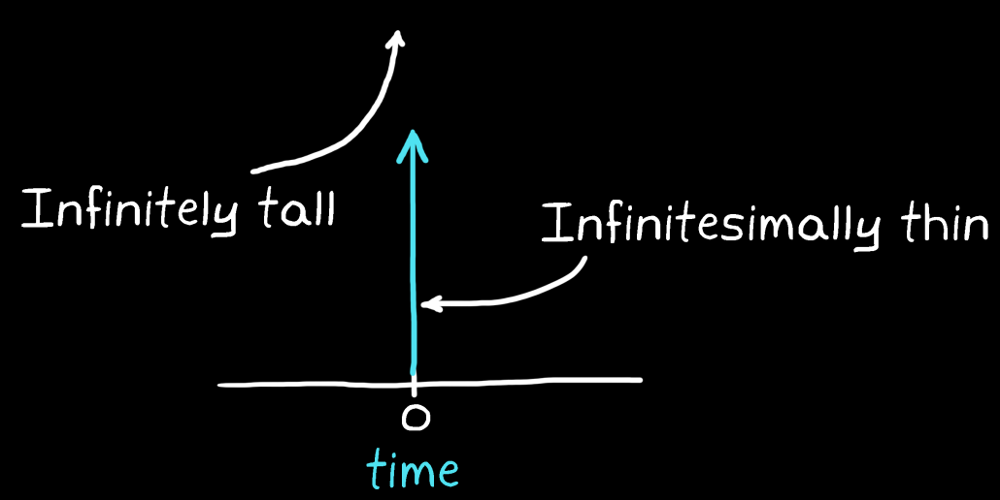

Since it is impossible to draw a line that is infinitesimally thin and infinitely tall, a Dirac Delta function is represented as an arrow pointing up at the time an impulse is applied.

Example: The derivative of a sinusoid is still a sinusoid. The integral of an exponential is still an exponential.
The integral of a square wave, for example, is a sloping step pattern and not another square wave. Hence, defining an LTI system's impulse response in terms of sinusoids and exponentials, makes sense.The ubiquity of these types of physical relationships is why the Laplace transform is one of the most important techniques in system analysis.